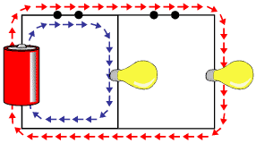

son los que consiguen convertir en luz toda la corriente eléctrica que les llega,
sin perder, como las bombillas incandescentes, una parte en forma de calor.
Son materiales cuya resistencia al paso de la electricidad es muy baja.
Los operadores son elementos básicos con los que se construyen circuitos, y desempeñan, por lo tanto,
las funciones elementales de la electrónica y la eléctrica. Estos elementos se clasifican
en dos categorías:
activos o pasivos. Entre los pasivos se incluyen los reóstatos, los condensadores y los inductores.
Los considerados activos incluyen las baterías (o pilas)
, los generadores, los tubos de vacío
Descripcion Imagen
es un generador que pasa por el fusible pasa por el conductor y llega asta el receptor
y por ultimo llega hacia el interruptor
Tipos de operadores electricos
Para construir un circuito eléctrico elemental necesitamos interconectar, como mínimo,
los operadores siguientes: pila eléctrica, cable, interruptor y lámpara.
ELECTRONICA BASICA
Estudio de los componentes electrónicos discretos básicos como elementos
de partida para la construcción de circuitos de aplicación:
el estudio del funcionamiento de los circuitos analógicos y digitales se basa en el
conocimiento de componentes discretos tales como resistencias, diodos y transistores.

Descripcion Imagen
una corriente de energia basica pasando
atravez del conducto de energia llegando haci hacia el foco para darle luz
Electrónica digital.